Qué es la plataforma
Es una plataforma de incentivos de venta. Los participantes fotografían sus recibos o facturas, el sistema lee el texto automáticamente (OCR) y, cuando encuentra productos de una campaña, les suma puntos. Al acumular puntos, cada participante va superando hitos que pueden tener recompensas.
- El admin crea productos
- Arma una campaña
- El usuario escanea su comprobante
- Se validan fecha, total y precios
- Se suman puntos e hitos
Los dos roles
Usuario
- Ve sus campañas, sus puntos y los hitos que le faltan.
- Escanea comprobantes para sumar puntos.
- Es el único rol que puede escanear.
Administrador
- Ve el panel de ventas y los productos más vendidos.
- Gestiona productos, campañas y usuarios.
- Revisa los comprobantes y anula puntos si algo no es válido.
No existe registro público: toda cuenta la crea un administrador, que invita a la persona por correo.
Acceso y navegación
Activar tu cuenta
- Un administrador crea tu cuenta con tu correo. Recibes un correo con un enlace para elegir tu contraseña. Nunca se envían contraseñas por correo.
- Abre el enlace, escribe tu contraseña nueva y confírmala.
- Vuelve a la plataforma e inicia sesión con tu correo y esa contraseña.
Si no te llegó el correo, pide al administrador que use Reenviar invitación, o que te comparta el enlace directamente.
Iniciar sesión
En la pantalla Iniciar sesión escribe tu Correo electrónico y tu Contraseña y pulsa Iniciar sesión. El ícono del ojo muestra u oculta lo que escribes.
Si los datos no coinciden verás «Esa combinación de correo y contraseña no funcionó.» El mensaje es el mismo si el correo no existe o si la contraseña es incorrecta; así nadie puede averiguar qué correos están registrados.
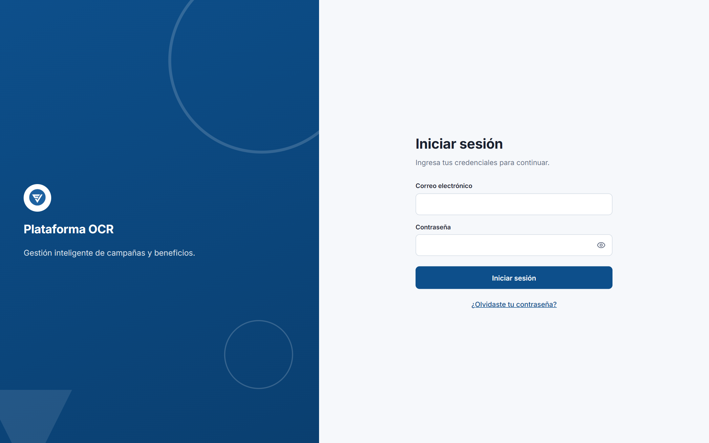
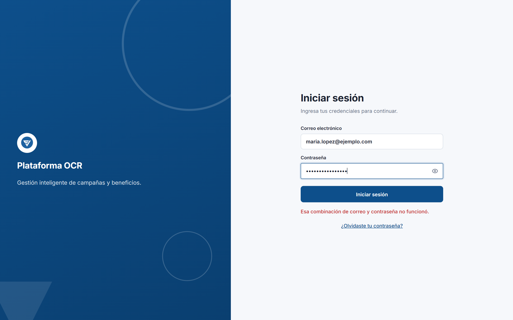
Olvidé mi contraseña
Escribe tu correo en el campo y pulsa ¿Olvidaste tu contraseña?. Aparecerá: «Si tu correo tiene una cuenta, un enlace para la contraseña está en camino.» Revisa también la carpeta de spam.
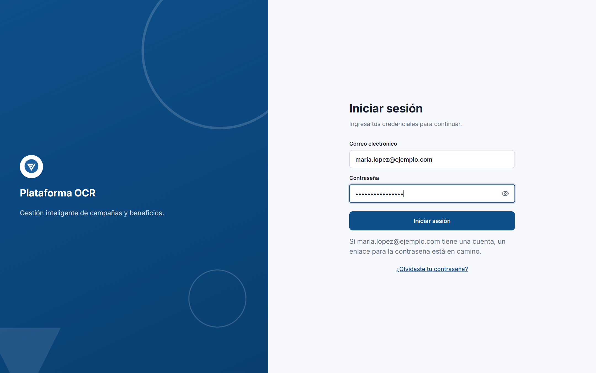
Moverte por la plataforma
- Menú lateral: Panel para todos; Campañas, Productos, Comprobantes y Usuarios solo para administradores. Se puede contraer con el botón junto al logo. En el celular se abre con el botón de menú de la barra superior.
- Tema claro u oscuro: el botón de la barra superior cambia entre ambos. La plataforma recuerda tu elección.
- Tu cuenta: pulsa tu avatar (tus iniciales) arriba a la derecha para ver tu nombre, correo y rol, y para Cerrar sesión.
Si entras a una página que tu rol no permite, verás No permitido.
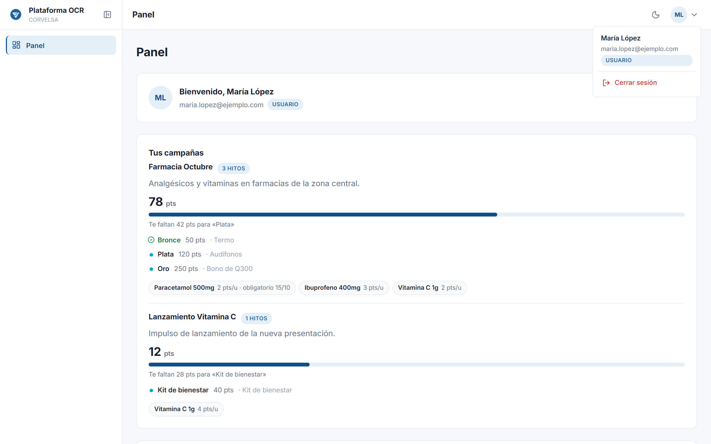
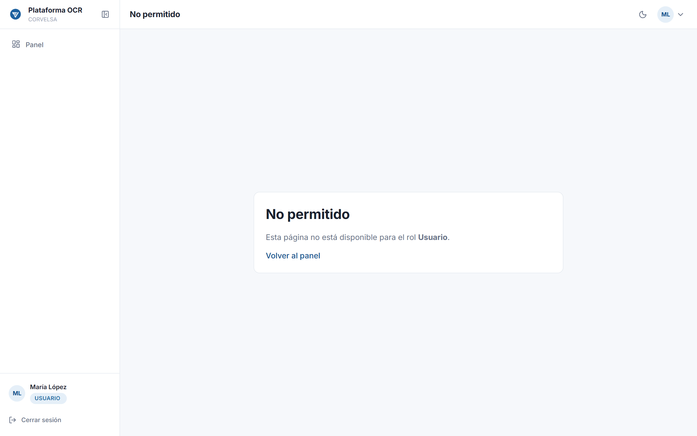
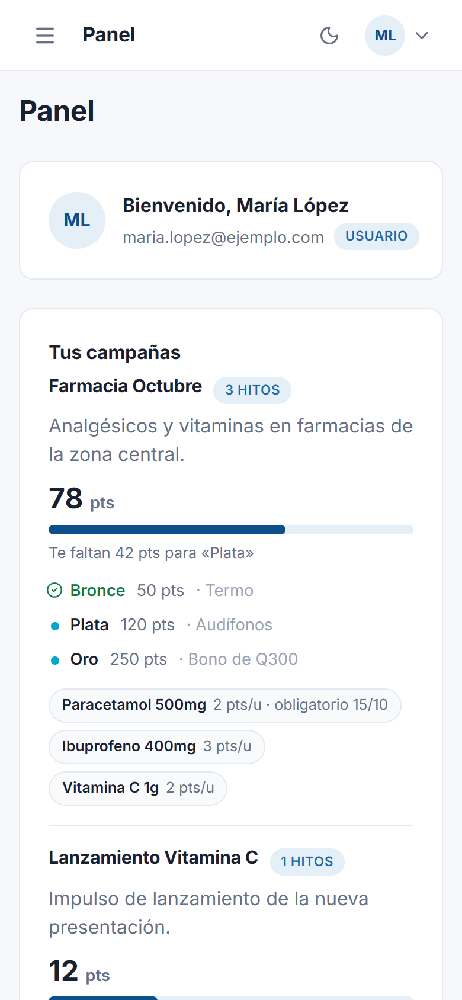
Guía del usuario
Al entrar llegas a tu Panel: tus campañas arriba y el escáner de comprobantes abajo.
Tus campañas
Cada campaña en la que participas muestra:
- Tus puntos acumulados en esa campaña.
- Una barra de progreso hacia el siguiente hito, con el texto «Te faltan N pts para «Nombre del hito»». Al superar el último verás «¡Completaste todos los hitos!».
- La escalera de hitos: cada hito con su meta en puntos y su recompensa. Los alcanzados aparecen con una marca de verificación verde.
- Los productos que suman, con los puntos que vale cada unidad (pts/u). Si un producto es obligatorio, verás cuántas unidades llevas y el mínimo exigido (por ejemplo obligatorio 1/3).
- Un aviso «Aún te faltan productos obligatorios» mientras no cumplas esos mínimos.
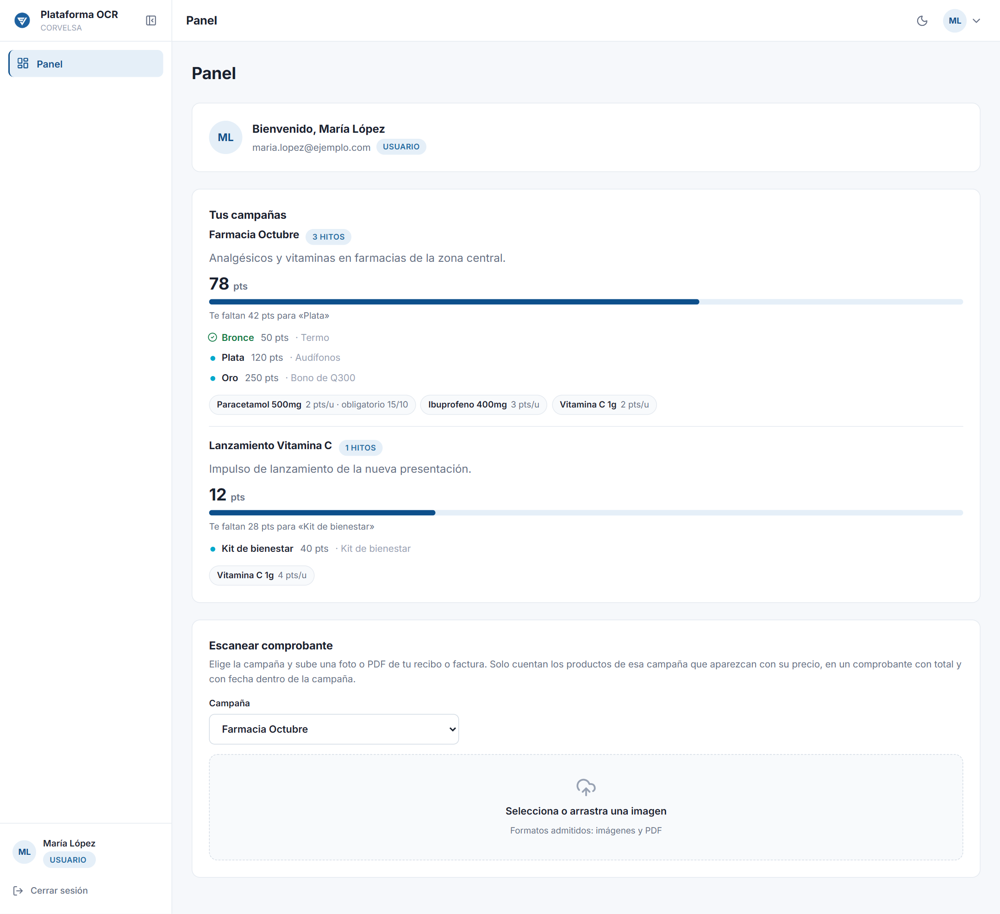
Escanear un comprobante
- En Escanear comprobante, elige la Campaña a la que corresponde. Solo aparecen las campañas vigentes; si participas en una sola, ya viene seleccionada.
- Pulsa la zona Selecciona o arrastra una imagen y elige la foto o el PDF del comprobante (o arrástralo encima). Formatos: PNG, JPG, WebP, TIFF o PDF, hasta 10 MB. En un PDF se leen las primeras 5 páginas.
- Espera mientras aparece «Leyendo el comprobante...».
- Revisa el resultado debajo.
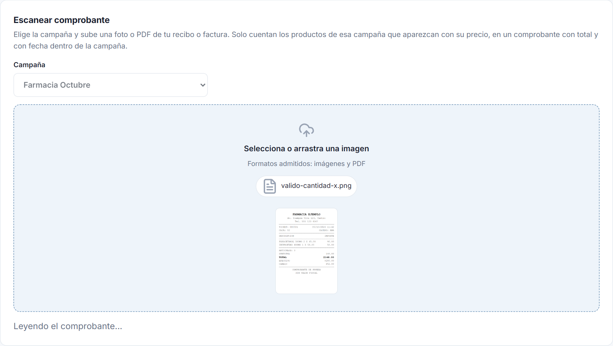
Entender el resultado
| Ves | Significa |
|---|---|
| «¡Sumaste N puntos en «Campaña»!» | El comprobante es válido. La tabla muestra cada producto, unidades, puntos por unidad y puntos ganados, además de la fecha del comprobante y tu total en la campaña. |
| «¡Alcanzaste el hito «X»!» | Este comprobante te hizo superar un hito. Si tiene recompensa, se indica debajo. |
| «Este comprobante no suma puntos en «Campaña»» | No se otorgaron puntos. Debajo se explica el motivo (sin total, sin fecha, fecha fuera de campaña o ningún producto de la campaña). |
| Aviso amarillo junto a puntos ganados | Se contaron algunos productos pero otros no (por ejemplo, un producto sin precio en su línea, o se superó el máximo de unidades). |
En Ver texto extraído puedes ver exactamente lo que el sistema leyó de la imagen. Es útil para entender por qué un producto no se reconoció.
Tras un escaneo con puntos, tus campañas se actualizan solas con el nuevo total.
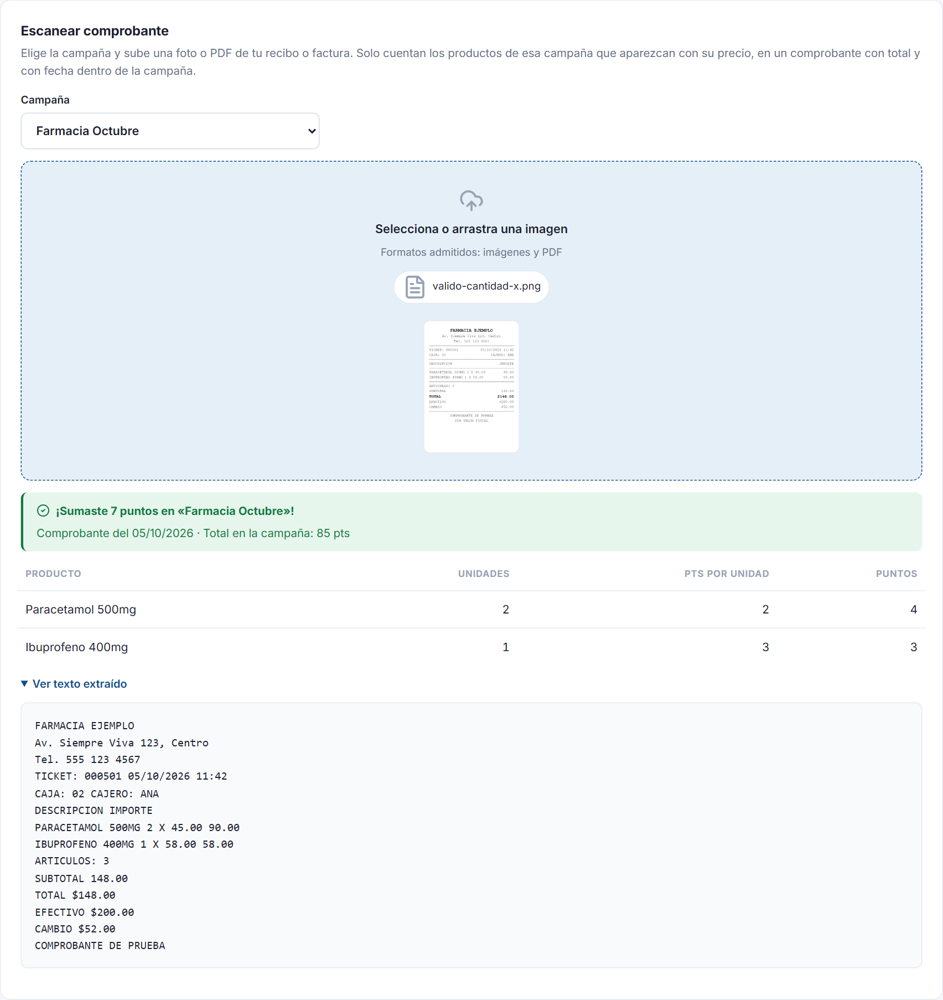
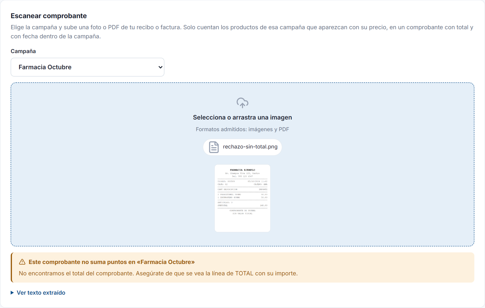
Consejos para una buena foto
- Toma el comprobante completo, de la cabecera al TOTAL. Si es muy largo, no lo dividas en dos fotos: la fecha y el total tienen que salir en la misma imagen.
- Apóyalo sobre una superficie plana, con buena luz y sin sombras ni reflejos.
- Asegúrate de que se lean la fecha, las líneas de productos con su precio y el TOTAL.
- Una ligera inclinación no importa; el sistema endereza la imagen.
Qué debe tener un comprobante
Para evitar abusos, un comprobante solo suma puntos si parece un comprobante real y de las fechas de la campaña. Esto es lo que el sistema busca:
- 1Fecha dentro de la campañaLa fecha impresa debe estar entre el inicio de la campaña y hoy. Un ticket de antes de la campaña, o con fecha futura, no suma.
- 2Precio en la línea del productoCada producto de la campaña debe aparecer con su importe. Una línea sin precio no cuenta (una nota escrita a mano con el nombre del producto no sirve).
- 3Línea de TOTAL con importeSin total, el comprobante no suma nada. El SUBTOTAL no cuenta como total.
- 4Identidad del comprobanteNúmero de ticket o folio (o la hora), fecha y total se usan para reconocer el mismo papel aunque se vuelva a fotografiar.
Otras reglas
- Un comprobante suma una sola vez. Volver a subir el mismo archivo, una copia, o una foto nueva del mismo papel (incluso desde otra cuenta) se rechaza.
- Máximo de unidades por comprobante: 50 unidades por campaña. Lo que exceda no se cuenta y se te avisa.
- Límite diario: 20 escaneos por usuario en cualquier periodo de 24 horas, incluidos los rechazados.
- Solo la campaña elegida: se buscan únicamente los productos de la campaña que seleccionaste, y solo si está vigente y participas en ella.
- Productos desactivados por el administrador no suman, aunque sigan en la campaña.
Los rechazados no quedan bloqueados: puedes tomar una foto mejor y volver a intentarlo. Solo los comprobantes que ya ganaron puntos no se pueden volver a usar.
Cómo se calculan los puntos
Puntos = unidades × puntos por unidad en esa campaña. Cada campaña puede dar un valor distinto al mismo producto.
Ejemplo con el ticket anterior en una campaña donde Paracetamol vale 2 pts por unidad: 3 + 2 = 5 unidades × 2 = 10 puntos. El ibuprofeno no suma porque no está en la campaña.
Cómo se lee la cantidad
El sistema reconoce las formas más comunes de escribir la cantidad en un ticket:
| En el ticket | Unidades |
|---|---|
3 PARACETAMOL 500MG 135.00 | 3 |
PARACETAMOL 500MG 2 X 45.00 | 2 |
PARACETAMOL 500MG x3 | 3 |
PARACETAMOL 500MG 4 UN | 4 |
PARACETAMOL CANT: 2 | 2 |
Cantidad en una línea aparte (3 X 45.00) arriba o abajo del producto | 3 |
| Sin cantidad visible | 1 |
Cuando la cantidad no es clara, el sistema cuenta una sola unidad. Prefiere dar de menos a dar de más; un administrador puede revisar el caso.
Cómo se reconoce el producto
- No importan mayúsculas, acentos, guiones ni espacios: «COCA-COLA» y «Coca Cola» son lo mismo.
- Se tolera una letra mal leída en nombres de 5 letras o más (dos en nombres largos).
- Los números deben coincidir exactos: «500ML» nunca se confunde con «600ML».
- El SKU o código se compara exacto.
- Si dos productos encajan en la misma línea, gana el nombre más largo y específico («Coca Cola Zero» antes que «Coca Cola»).
Hitos
Los hitos se alcanzan por puntos acumulados en la campaña. Cada participante avanza por su cuenta sobre la misma escalera. Los productos obligatorios se muestran como pendientes mientras no se cumpla su mínimo, pero no impiden alcanzar hitos.
Panel del administrador
Como administrador, tu Panel es el resumen de ventas. Mientras carga, verás una vista previa gris con la misma forma del panel.
Tarjetas de resumen
| Tarjeta | Muestra |
|---|---|
| Productos registrados | Total de productos, cuántos están activos y cuántas campañas están activas. |
| Vendidos hoy | Unidades vendidas hoy, con comprobantes y puntos otorgados. |
| Vendidos esta semana | Desde el lunes de esta semana. |
| Vendidos este mes | Desde el día 1 del mes. |
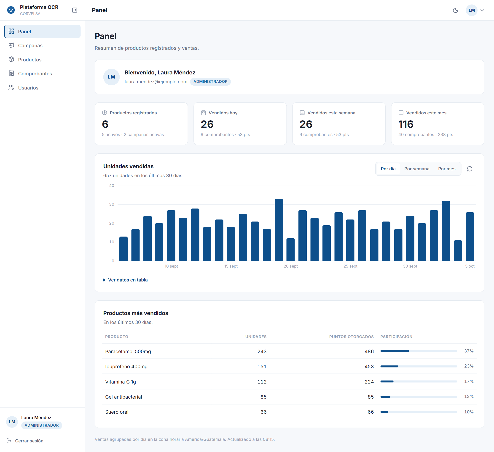
Unidades vendidas
El gráfico de barras muestra las unidades vendidas. Cambia la agrupación con Por día (últimos 30 días), Por semana (últimas 12 semanas) o Por mes (últimos 12 meses). Pasa el cursor o el teclado sobre una barra para ver unidades, puntos y comprobantes de ese periodo. En Ver datos en tabla están los mismos números. El botón de flechas circulares actualiza los datos.
Productos más vendidos
Los productos con más unidades en el mismo periodo, con los puntos otorgados y su participación sobre el total.
Solo las unidades de comprobantes que ganaron puntos. Los días se cortan en la zona horaria indicada al pie del panel. Si anulas un comprobante, sus unidades se restan del día en que se escaneó.
Productos
Los productos son la tabla de puntos: qué se puede vender y cuánto vale por defecto cada unidad.
Agregar un producto
- Ve a Productos.
- Completa Nombre, SKU (opcional) y Puntos por unidad.
- Pulsa Agregar producto.
El sistema busca el nombre en el texto del comprobante. Si las tiendas lo abrevian (por ejemplo «PARACET 500MG»), usa ese texto, o registra como SKU el código que imprimen, que se compara exacto.
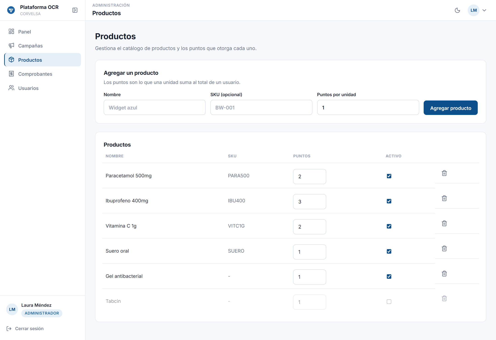
Editar, desactivar y eliminar
- Puntos: cambia el número en la tabla; se guarda al salir del campo. Esto cambia el valor por defecto, no el de campañas ya creadas.
- Activo: desmarcarlo desactiva el producto. Un producto inactivo no suma puntos y no se puede añadir a campañas nuevas.
- Eliminar (ícono de papelera): no se permite si una campaña en borrador o activa lo usa. En ese caso desactívalo, o archiva primero la campaña.
Campañas
Una campaña define qué productos suman, cuánto vale cada uno en ella, los hitos a alcanzar y quién participa.
Crear una campaña
- En Campañas, pulsa + Nueva campaña.
- Datos: Nombre, Descripción, fecha y hora de Inicia y Termina. El fin debe ser posterior al inicio.
- Productos que cuentan: marca la casilla de cada producto. Puntos aquí parte del valor por defecto y puedes cambiarlo solo para esta campaña. Marca Obligatorio y fija una Cant. mín. de al menos 1 si quieres exigir un mínimo de unidades.
- Hitos: pulsa Agregar hito y define Nombre, Puntos meta y Recompensa (opcional). Cada hito debe tener una meta mayor que el anterior. Quitar elimina un hito.
- Quién participa: marca las cuentas que compiten en la campaña. Las cuentas deshabilitadas no aparecen.
- Pulsa Crear campaña. Se guarda como Borrador.
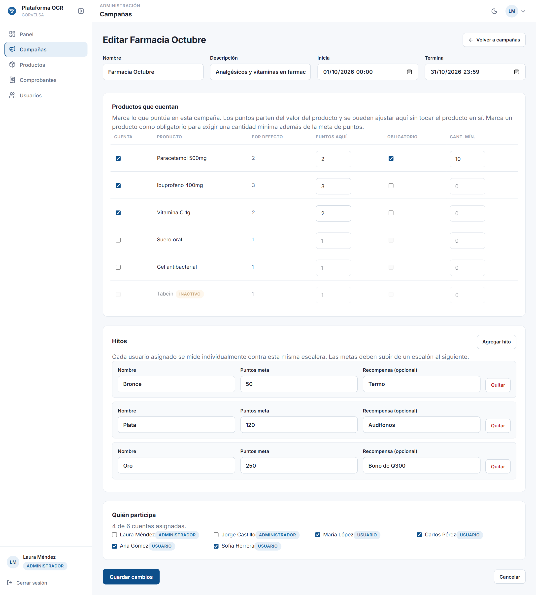
Estados de una campaña
| Estado | Qué pasa | Acción siguiente |
|---|---|---|
| Borrador | Se puede editar. Los participantes aún no pueden escanear en ella. | Iniciar (exige al menos un producto y un hito) |
| Activa | Los participantes la ven y escanean en ella mientras esté dentro de sus fechas. Se puede editar. No se puede eliminar. | Archivar |
| Archivada | Solo lectura. Nadie escanea en ella. | Volver a borrador |
Las acciones están en el menú de tres puntos de cada fila: Editar (o Ver si está archivada), el cambio de estado y Eliminar.
Una campaña activa solo acepta comprobantes entre su fecha de inicio y de fin. Antes de empezar o después de terminar, los participantes no pueden escanear en ella.
Al guardar una edición se reemplaza toda la configuración de la campaña con lo que ves en el formulario.
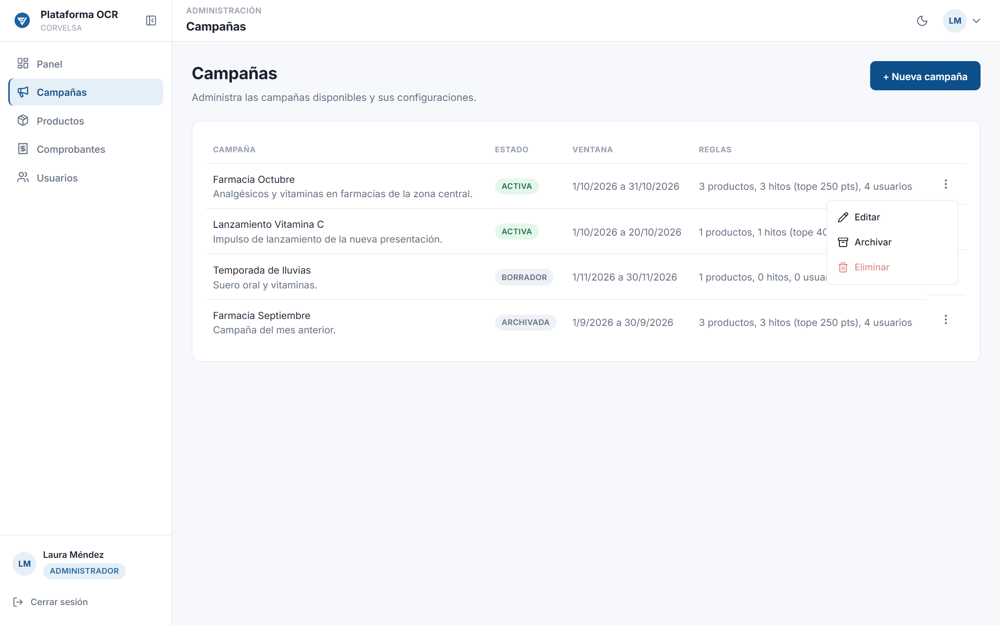
Usuarios
Invitar a alguien
- En Usuarios, escribe el Correo y, si quieres, el Nombre (opcional).
- Pulsa Crear e invitar. La cuenta nueva siempre empieza con rol Usuario.
- Si el envío de correos está configurado verás «Invitación enviada a …». Si no, la plataforma muestra el enlace de invitación para que se lo envíes tú a la persona.
Gestionar cuentas
- Rol: cambia entre Usuario y Administrador con el selector de la fila. El cambio llega a la otra persona en menos de una hora, o de inmediato si cierra sesión y vuelve a entrar.
- Reenviar invitación (ícono de avión de papel): genera un enlace nuevo para elegir contraseña.
- Deshabilitar (ícono de prohibido): bloquea el acceso sin borrar la cuenta ni su historial. El mismo botón la vuelve a habilitar.
No puedes quitarte tu propio rol de administrador ni deshabilitar tu propia cuenta; así nadie deja la plataforma sin administradores por accidente.
Para que un usuario gane puntos, además de tener cuenta debe estar marcado como participante en la campaña.
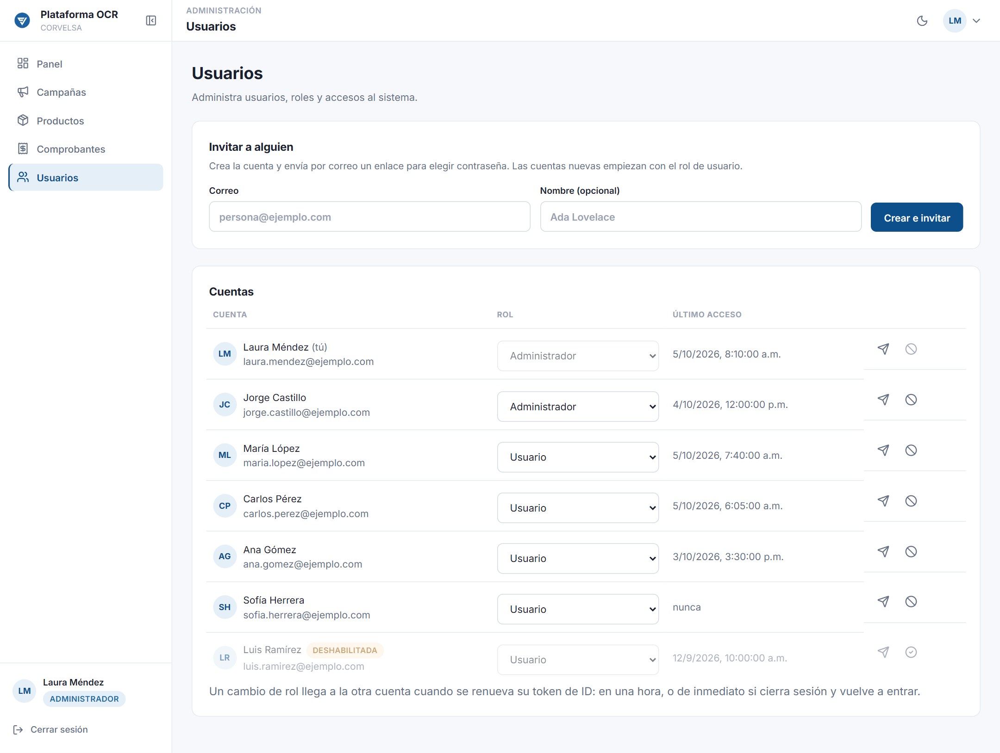
Revisión de comprobantes
En Comprobantes ves cada escaneo con su evidencia, y puedes anular los puntos de los que no sean válidos.
La lista
Filtra con Todos o Para revisar. Cada fila muestra fecha, usuario, campaña, puntos y estado. Usa Cargar más para ver escaneos anteriores.
| Estado | Significa |
|---|---|
| Con puntos | El comprobante ganó puntos. |
| Sin puntos | Fue rechazado o no tenía productos de la campaña. |
| Anulado | Un administrador retiró sus puntos. |
| Revisar | Ganó puntos, pero algo inusual merece una mirada (ver abajo). |
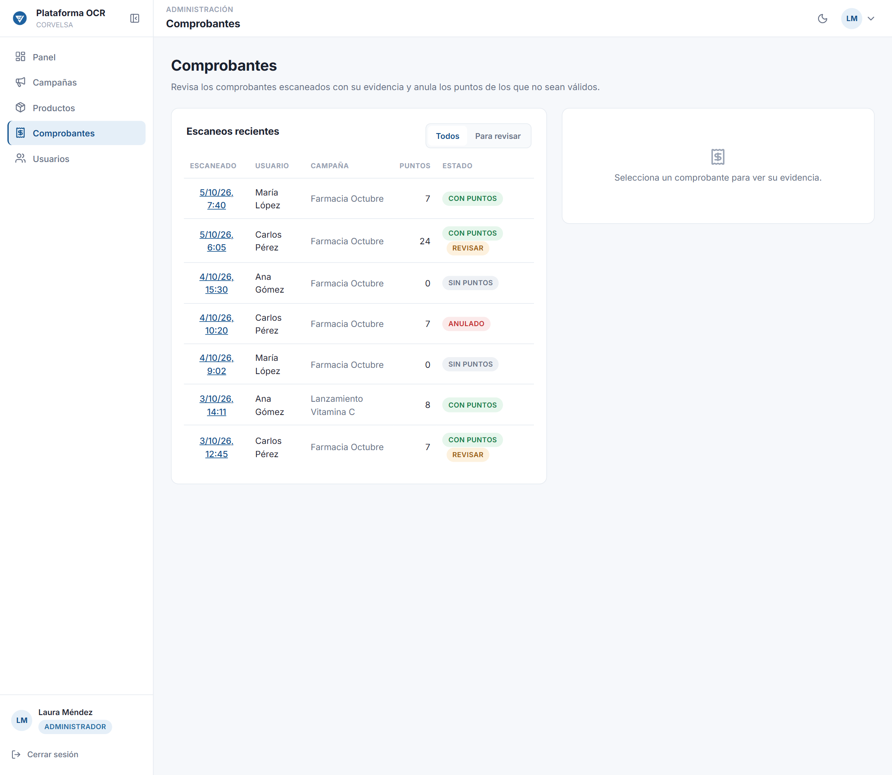
Motivos para revisar
Estas marcas no cambian los puntos; solo llevan el comprobante a Para revisar.
- Superó el máximo de unidades por comprobante.
- Muchas unidades en una sola línea (10 o más): puede ser una compra grande o una lectura errónea.
- El usuario envió muchos comprobantes en 24 horas (5 o más).
- No se pudo guardar el archivo como evidencia.
El detalle
Selecciona una fila para ver: usuario, campaña, fechas y puntos; la imagen del comprobante (Abrir el original la abre en otra pestaña; los PDF se abren así); los productos contados; los problemas detectados; y el texto extraído.
Anular puntos
- En el detalle de un comprobante Con puntos, escribe el Motivo de la anulación (mínimo 3 caracteres).
- Pulsa Anular puntos y confirma.
Al anular se restan los puntos y unidades del participante, se recalcula su hito y se descuenta la venta del panel. No se puede deshacer, y ese comprobante tampoco se podrá volver a subir.
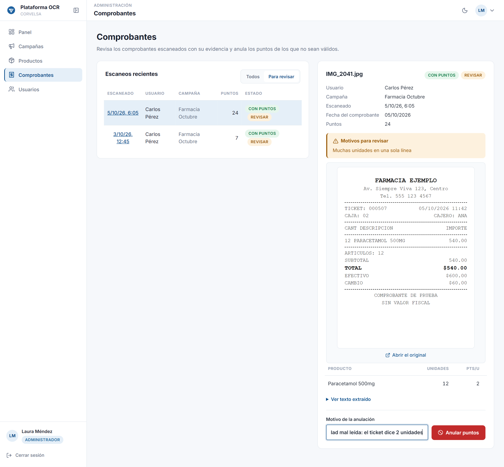
Mensajes y solución de problemas
Al escanear
| Mensaje | Por qué | Qué hacer |
|---|---|---|
| Este comprobante ya fue registrado. Cada comprobante suma puntos una sola vez. | Ese comprobante ya ganó puntos, en esta cuenta u otra. | Nada: cada papel cuenta una vez. |
| No encontramos el total del comprobante… | No se leyó una línea TOTAL con importe. | Vuelve a tomar la foto con el TOTAL visible. |
| No pudimos leer la fecha del comprobante… | No se encontró una fecha legible. | Foto nueva con la fecha nítida. |
| La fecha del comprobante (…) está fuera de las fechas de la campaña. | El ticket es anterior a la campaña, posterior a su fin o con fecha futura. | Solo cuentan compras dentro de la campaña. |
| Estos productos no muestran su precio en el comprobante y no se contaron… | Se encontró el producto pero sin importe en su línea. | Asegúrate de que la columna de precios salga en la foto. |
| Un comprobante puede sumar como máximo N unidades por campaña… | Se superó el máximo por comprobante. | Se contó hasta el máximo; un administrador puede revisarlo. |
| No encontramos productos de esta campaña en el comprobante. | Ningún producto coincidió. | Revisa la campaña elegida y Ver texto extraído. |
| Alcanzaste el límite de comprobantes por día… | 20 escaneos en 24 horas. | Espera y vuelve a intentarlo más tarde. |
| No participas en esta campaña. | No estás asignado a ella. | Pide al administrador que te agregue. |
| Esta campaña no está vigente en este momento. | Aún no empieza, ya terminó o no está activa. | Elige otra campaña o espera a que empiece. |
| No tienes campañas vigentes… | No participas en ninguna campaña en curso. | Consulta al administrador. |
| Solo las cuentas de usuario pueden escanear comprobantes. | Los administradores no escanean. | Usa una cuenta de rol Usuario. |
Otros
| Situación | Qué hacer |
|---|---|
| No puedo iniciar sesión | Usa «¿Olvidaste tu contraseña?». Si tu cuenta fue deshabilitada, habla con el administrador. |
| Me cambiaron el rol y no lo veo | Cierra sesión y vuelve a entrar. |
| No aparece una campaña para escanear | Solo aparecen las activas, dentro de sus fechas y en las que participas. |
| No puedo eliminar un producto | Una campaña en borrador o activa lo usa: desactívalo o archiva la campaña. |
| No puedo iniciar una campaña | Necesita al menos un producto y un hito. |
| Un error en inglés que menciona «Firestore index» | Es un problema de configuración, no de tus datos: avisa al equipo técnico (ver anexo). |
Preguntas frecuentes
¿Puedo escanear un mismo ticket para dos campañas?
No. Cada escaneo se asigna a una sola campaña, y un comprobante que ya ganó puntos no se vuelve a aceptar.
¿Qué pasa si el sistema leyó mal una cantidad?
Ante la duda cuenta 1 unidad. Si crees que te corresponde más, avisa al administrador; puede revisar la imagen original.
¿Se guardan mis fotos?
Sí. Cada archivo se guarda como evidencia y solo los administradores pueden verlo, mediante enlaces temporales.
Si el administrador cambia los puntos de un producto, ¿cambian mis puntos?
No. Los puntos ya ganados se quedan; el cambio solo afecta escaneos futuros.
¿Hay aplicación para el celular?
No hace falta: la plataforma funciona en el navegador del celular y permite subir fotos directamente desde la cámara o la galería.
Glosario
- Comprobante
- Recibo, ticket o factura de compra que se fotografía o sube en PDF.
- OCR
- Reconocimiento óptico de caracteres: la lectura automática del texto de la imagen.
- Campaña
- Conjunto de reglas con fechas: productos que suman, sus puntos, hitos y participantes.
- Vigente
- Campaña activa cuya fecha actual está entre su inicio y su fin.
- Puntos por unidad
- Lo que vale una unidad de un producto dentro de una campaña.
- Hito
- Meta de puntos dentro de una campaña, con recompensa opcional.
- Producto obligatorio
- Producto con una cantidad mínima exigida en la campaña.
- Participante
- Usuario asignado a una campaña.
- Evidencia
- El archivo original del comprobante, guardado para revisión.
- Anular
- Retirar los puntos de un comprobante ya aceptado.
Anexo técnico
Para quien instala y opera la plataforma.
El detalle completo de arquitectura, API, datos, despliegue y operación está en el Manual técnico de la plataforma (Manual-Tecnico-Plataforma-OCR).
Cómo está armada
| Parte | Tecnología | Dónde vive |
|---|---|---|
| Sitio web | React 19 + Vite | GitHub Pages — https://firebirdcs.github.io/Proyecto-OCR/ |
| API | Node + Express 5 | Cloud Run (servicio ocr-api, región us-central1) |
| Cuentas y roles | Firebase Authentication | Proyecto proyecto-ocr-d3ecd |
| Datos | Cloud Firestore | Mismo proyecto |
| Archivos de comprobantes | Cloud Storage | Bucket privado del proyecto |
| Lectura de texto | Google Cloud Vision | Mismo proyecto |
| Correos de invitación | Resend | Clave en Secret Manager |
Primer administrador
No hay registro público, así que la primera cuenta se crea desde la terminal, en la raíz del proyecto:
pnpm user:create correo@empresa.com admin "Nombre Apellido"Imprime el enlace para elegir contraseña. Para cambiar un rol por correo: pnpm role:grant correo@empresa.com admin.
Ajustes de la API
| Variable | Para qué | Por defecto |
|---|---|---|
SCAN_DAILY_LIMIT | Escaneos por usuario en 24 horas. | 20 |
RECEIPT_MAX_UNITS | Unidades máximas por comprobante y campaña. | 50 |
STATS_TIME_ZONE | Zona horaria en que se cortan los días del panel. | La del servidor |
OCR_MAX_UPLOAD_MB | Tamaño máximo del archivo. | 10 |
CLIENT_ORIGIN | Sitios que pueden llamar a la API, separados por comas. | http://localhost:5173 |
CLIENT_APP_URL | Dirección pública del sitio, para los enlaces de invitación. | El primer origen |
FIREBASE_STORAGE_BUCKET | Dónde se guarda la evidencia. | — |
RESEND_FROM | Remitente de los correos. | — |
BOOTSTRAP_ADMIN_EMAILS | Correos que siempre recuperan el rol de admin al entrar. | Vacío |
Desplegar la API
Desde la raíz del proyecto, en PowerShell, con la CLI de Google Cloud instalada y gcloud auth login hecho:
.\scripts\deploy-api.ps1 -SkipSetup -ClientOrigins http://localhost:5173,https://firebirdcs.github.io -ClientAppUrl https://firebirdcs.github.io/Proyecto-OCRSin -SkipSetup también habilita las APIs y permisos (solo la primera vez). Acepta -TimeZone, -ScanDailyLimit y -ReceiptMaxUnits. La dirección de la API queda en scripts\.last-deploy-url.txt.
Para la clave de Resend, en una ventana de PowerShell normal:
.\scripts\set-resend-key.ps1La clave se escribe en un aviso oculto, nunca como parámetro. Repítelo al rotar la clave.
Publicar el sitio
Cada envío a la rama master publica el sitio automáticamente (GitHub Actions). Requiere, en el repositorio: Settings → Pages → Source: GitHub Actions, y en Settings → Secrets and variables → Actions → Variables los valores VITE_FIREBASE_* y VITE_API_BASE_URL. En Firebase, el dominio firebirdcs.github.io debe estar en Authentication → Settings → Authorized domains.
Firestore y Storage
npx firebase-tools deploy --only firestore:indexes,firestore:rules,storageSi el panel muestra que falta un índice, este comando lo resuelve; el índice tarda unos minutos en construirse.
server/serviceAccount.json y server/.env dan acceso total al proyecto. Nunca se suben al repositorio (ya están excluidos) ni se comparten por chat. Si una clave se expone, revócala y crea otra.
Política de mitigación de riesgo del OCR
Riesgos técnicos del pipeline de OCR — extracción de texto con Google Cloud Vision, validación del comprobante, emparejamiento de productos y otorgamiento de puntos — y las mitigaciones ya implementadas en el código. No cubre riesgos de negocio, legales ni de continuidad fuera del software.
Precisión del OCR (Google Cloud Vision)
- Ángulo y rotación. Fotos inclinadas: se corrige el ángulo medio de lectura, pero una perspectiva fuerte puede seguir mezclando columnas.
- Recibos borrosos o tinta desgastada. Vision puede devolver texto parcial sin marcarlo como error; el campo confidence no se usa para descartar lecturas de baja confianza.
- Confusión de columnas. La reconstrucción de filas por altura puede fusionar o separar líneas en recibos muy angostos o con tipografía variable.
- PDFs largos. Solo se leen las páginas 1 a 5 de un PDF; el resto se pierde sin aviso.
- Idioma y formato regional. Los patrones de fecha y monto asumen formato latino/español; otros formatos pueden no detectar fecha o total.
- Errores del servicio. Cualquier falla de Vision se devuelve como error 502 sin reintento automático.
Fraude y abuso del sistema de puntos
- Nota a mano como recibo. Mitigado: una línea solo cuenta si lleva un monto con dos decimales, y el recibo necesita TOTAL y fecha dentro de la campaña.
- Reenvío del mismo recibo. Mitigado con tres guardas (hash de archivo, hash de texto, identidad del recibo). Riesgo residual cuando no hay folio ni hora: la identidad de respaldo puede fallar en ambos sentidos.
- Doble cuenta. El límite diario es por cuenta, no por dispositivo; dos cuentas duplican la cuota, aunque el duplicado de recibo sí aplica globalmente.
- Sobre-conteo de unidades. Mitigado por diseño: cantidad ambigua cuenta 1 unidad, y RECEIPT_MAX_UNITS topa el total por recibo.
- Líneas sospechosas. No bloqueados, solo marcados para revisión manual (flags de cantidad alta y escaneo frecuente); el control depende de que un admin revise la cola.
- Abuso de rol admin. Mitigado por diseño: solo el rol user puede escanear; un admin no puede auto-otorgarse puntos.
Disponibilidad y dependencia de terceros
- Punto único de falla. No hay OCR alterno: si Vision cae, ningún escaneo puede procesarse.
- Costo por volumen. Cada intento de escaneo cuesta una llamada a Vision aunque no puntúe; un ataque de escaneos inválidos genera costo real.
- Límites de Cloud Run. --max-instances 3 puede saturarse en picos de uso simultáneo (cierre de campaña).
Seguridad y credenciales
- Llave de servicio local. Existe en server/serviceAccount.json, excluido del repositorio, pero sin rotación programada; una copia local expuesta da acceso total al proyecto.
- Despliegue en producción. En Cloud Run el servicio corre con identidad nativa de GCP, sin llave en la imagen — control ya aplicado correctamente.
- Evidencia en Cloud Storage. Las fotos de recibos pueden incluir datos personales o de tarjeta; dependen de las reglas de acceso del bucket configurado en FIREBASE_STORAGE_BUCKET.
Operación e infraestructura
Si el índice compuesto de firestore.indexes.json no está desplegado, el límite diario de escaneos (SCAN_DAILY_LIMIT) se desactiva silenciosamente — el código lo permite a propósito para no bloquear el servicio, y solo queda un console.error en el servidor. Un despliegue incompleto abre la puerta a abuso sin que nadie lo note.
- Zona horaria no fijada. STATS_TIME_ZONE es opcional; vacío, el panel corta los días según la zona del servidor y puede desalinear las métricas.
- Atomicidad del puntaje. Todo el otorgamiento de puntos corre en una transacción de Firestore; si algo falla, la evidencia ya subida se borra — buen control existente.
Matriz de riesgo
| Riesgo | Probabilidad | Impacto | Mitigación vigente |
|---|---|---|---|
| Índice de Firestore no desplegado → límite diario queda desactivado | Media | Alto | Ninguna automática; solo se registra en logs del servidor |
| Caída o error de Google Cloud Vision (sin OCR alterno) | Baja | Alto | Ninguna; el escaneo falla con HTTP 502, sin reintento |
| Fotos borrosas, mal iluminadas o PDFs de más de 5 páginas | Alta | Medio | Parcial: reconstrucción de filas, pero no usa el confidence de Vision |
| Recibo reenviado cuando la identidad de respaldo es ambigua (sin folio ni hora) | Baja | Medio | Parcial: 3 guardas de duplicado, pero la identidad de respaldo puede fallar en ambos sentidos |
| Doble cuenta para duplicar la cuota diaria de escaneos | Media | Bajo/Medio | Parcial: el duplicado de recibo es global, la cuota es por cuenta |
| Exposición de server/serviceAccount.json fuera del repositorio | Baja | Alto | Parcial: excluido del repositorio (.gitignore), sin rotación programada |
| Saturación de Cloud Run en picos de uso (cierre de campaña) | Media | Medio | Parcial: --max-instances 3, sin autoescalado adicional configurado |
| Zona horaria de estadísticas (STATS_TIME_ZONE) sin fijar | Media | Bajo | Ninguna; el campo es opcional y cae en la zona del servidor |
Recomendaciones
- Convertir la falta del índice de Firestore en una alerta visible al admin, no solo un log de servidor.
- Añadir un límite de escaneos adicional por dispositivo o verificación extra en altas de cuenta nuevas.
- Usar el confidence de Vision para marcar líneas de baja confianza en la cola de revisión.
- Avisar explícitamente cuando un PDF tiene más de 5 páginas y el resto no se procesó.
- Fijar STATS_TIME_ZONE en el despliegue en vez de dejarlo opcional.
- Añadir reintento con backoff ante errores transitorios de Vision antes de fallar al usuario.
- Programar revisión y rotación periódica de server/serviceAccount.json.
- Monitorear instancias de Cloud Run durante cierres de campaña y ajustar max-instances si hace falta.